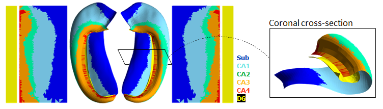

HippUnfold
HippUnfold is a software application designed to work with high-resolution MRI images of the hippocampus. It leverages prior knowledge about hippocampal shape and ontogeny to provide accurate and reliable measurements of hippocampal volume and shape.
The software was developed by Dr. Jordan DeKraker during his PhD at Western University along with Dr Ali Khan. It is now being maintained and extended by both Jordan and Ali, and has users across Canada, the USA, the UK, and Germany performing state-of-the-art research.
HippUnfold Toolbox
HippUnfold Toolbox is a set of MATLAB and Python examples meant to show users of HippUnfold how to carry out more sophisticated analyses using HippUnfold. This includes custom code for mapping DWI and fMRI data, as well as surface-based second-level analyses, custom visualization, surface manipulation, and many other useful tidbits.
The software was developed by Dr. Jordan DeKraker during his postdoctoral fellowship at McGill University.
OldCortex

OldCortex is a software application designed to visualize the topology of the human cerebral cortex thoughout its gradual evolution.
The software was developed by Dr. Jordan DeKraker during his postdoctoral fellowship at McGill University.
TemporalPolarMap

TemporalPolarMap is a MATLAB toolbox for flatmapping the human anterior temporal lobe (or temporal pole).
The software was developed by Dr. Jordan DeKraker during his postdoctoral fellowship at McGill University.